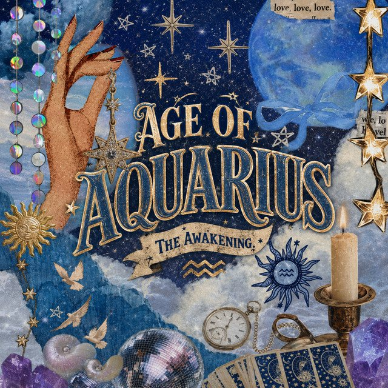

The Eclectic Polymath Podcast · Archive
#047: The Age of Aquarius: Femininity, Technology, and the Cusp of a New Era

About this episode
The Age of Aquarius is one of those ideas that sits between astronomy, astrology, spirituality, and cultural theory. Some people treat it like prophecy. Others treat it like mythology. Others see it as a symbolic way to explain why the world feels like it is changing so fast.
This episode looks at the astronomical basis behind the idea, including the precession of the equinoxes, the long wobble of Earth’s axis, and why astrologers describe human history through vast symbolic ages like Pisces and Aquarius.
We get into what the Age of Pisces is often associated with: faith, hierarchy, institutions, sacrifice, and religious authority. Then we move into the Aquarian imagination: decentralization, technology, networks, collective consciousness, information, liberation, and the darker possibility of technocratic control.
Key points
- The Age of Aquarius is one of those ideas that sits between astronomy, astrology, spirituality, and cultural theory.
- This episode looks at the astronomical basis behind the idea, including the precession of the equinoxes, the long wobble of Earth’s axis, and why astrologers describe human history through vast symbolic ages like Pisces and Aquarius.
- We get into what the Age of Pisces is often associated with: faith, hierarchy, institutions, sacrifice, and religious authority.
- From the 2020 Great Conjunction to AI, crypto, spiritual “veil lifting,” feminine energy, social disruption, and the push-pull between freedom and surveillance, this is not a claim that astrology proves history.
- It is a look at why the Age of Aquarius has become such a powerful framework for people trying to make sense of the future.
More like this
 #085 Arabization and Islamization: How Conquest Became CultureJuly 6, 202652:16
#085 Arabization and Islamization: How Conquest Became CultureJuly 6, 202652:16 #080 Louis Farrakhan: Charisma, Controversy, and the Nation of IslamJuly 3, 202654:06
#080 Louis Farrakhan: Charisma, Controversy, and the Nation of IslamJuly 3, 202654:06 #075 Black Art: Spiritual Power, Market Value, and the Fight for OwnershipJune 30, 202643:30
#075 Black Art: Spiritual Power, Market Value, and the Fight for OwnershipJune 30, 202643:30 #067 The Kardashians: Armenian Family Prophecy and the Making of an American DynastyJune 28, 202658:06
#067 The Kardashians: Armenian Family Prophecy and the Making of an American DynastyJune 28, 202658:06